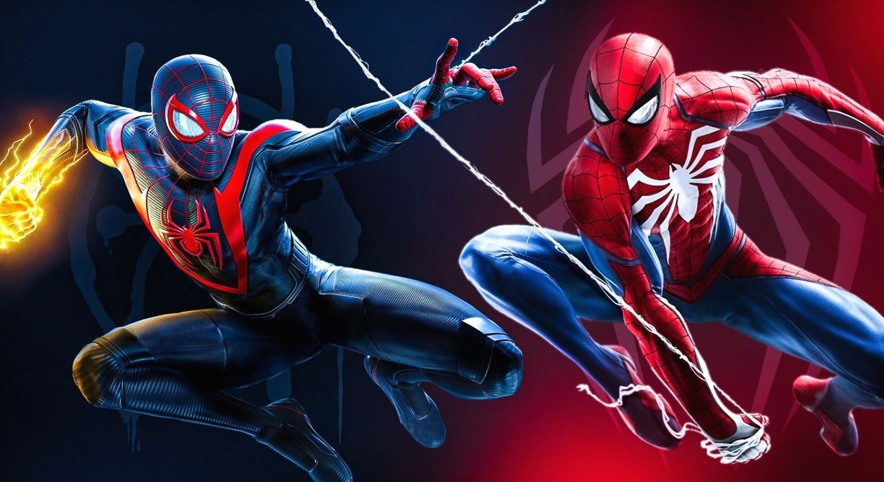

God of War Ragnarök is an action-adventure game developed by Santa Monica Studio and published by Sony Interactive Entertainment. It was released worldwide on November 9, 2022, for the PlayStation 4 and PlayStation 5, marking the first cross-gen release in the God of War series.
God of War Ragnarök tells an emotional story of complex relationships and difficult choices, while Kratos and Atreus set out to break prophecy. God of War Ragnarok is a massive game packed with rich lore, profound character depth, and emotional storytelling.

about 24½ Hours When focusing on the main objectives, God of War: Ragnarök is about 24½ Hours in length. If you're a gamer that strives to see all aspects of the game, you are likely to spend around 51 Hours to obtain 100% completion.